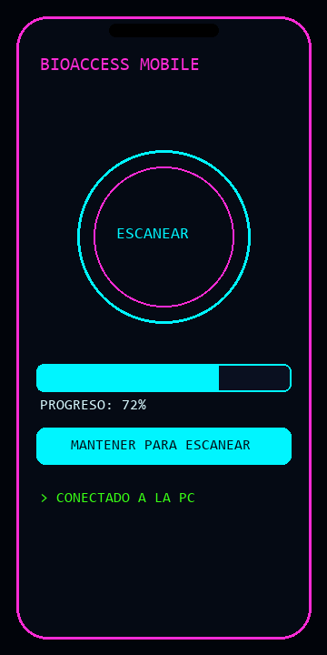

BIOACCESS
Sistema de control de acceso por huella para PC y celular. La PC gestiona, el celular autoriza, y ambos se vinculan de forma segura en la misma red.
// QUÉ ES
BioAccess es un sistema de acceso biométrico que une una terminal de escritorio con un celular. La PC envía una solicitud, el celular captura la huella y, si es válida, la PC concede el acceso.
Terminal PC
Interfaz cyberpunk, servidor embebido, vinculación y aprobación de dispositivos.
App móvil
Escáner biométrico real o simulado, historial, ajustes y vinculación por QR, código o USB.
Servidor
FastAPI + WebSocket + descubrimiento UDP para encontrar la PC en la red.
Simulador
Un solo archivo Python que reproduce todo el sistema en una sola PC.
// CÓMO FUNCIONA
La PC inicia el servidor y muestra su IP.
El celular busca la PC en la red.
Se vinculan por QR, código o USB.
La PC solicita huella.
El celular valida y responde.
Acceso concedido o denegado.
// CÓMO SE CONECTA
La PC detecta automáticamente su IP local. El celular se conecta por los mismos canales:
Sirve la app móvil y los datos de la PC.
Comunicación en tiempo real entre PC y celular.
Descubrimiento automático de la PC en la LAN.
Vinculación segura con código de 6 caracteres.
// APARIENCIA
// DESCARGAS Y DOCUMENTACIÓN
// GALERIA
Capturas del sistema (interfaz cyberpunk).


// REFERENCIAS DEL TRABAJO
Desarrollado con Python, PyQt6, FastAPI, uvicorn, WebSockets, qrcode, Android BiometricPrompt, ZXing y PyQt6-WebEngine. Incluye terminal PC, app móvil, servidor embebido, APK nativa, instalador y simulador portable.